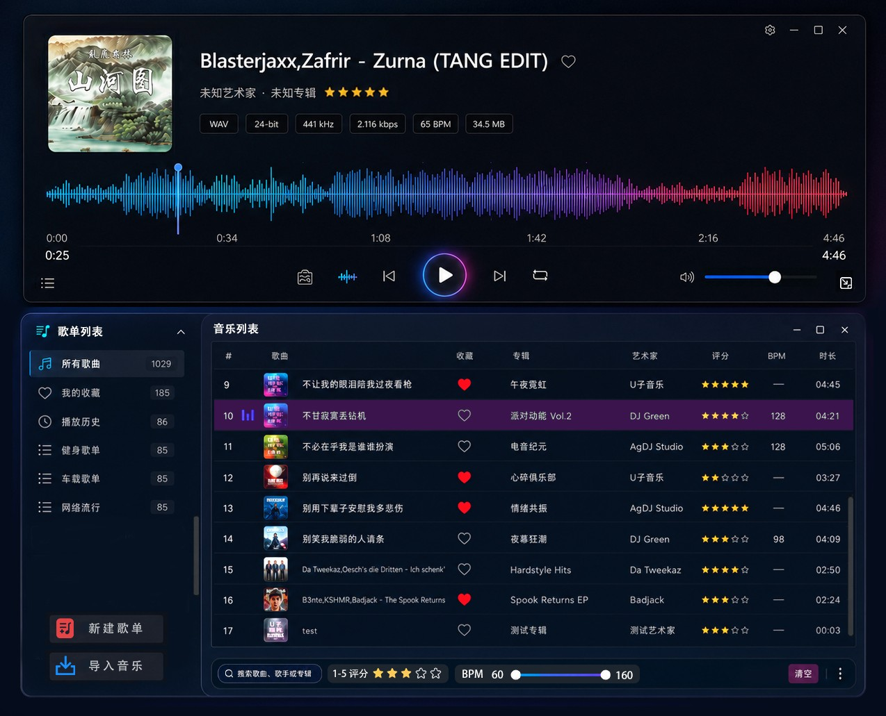
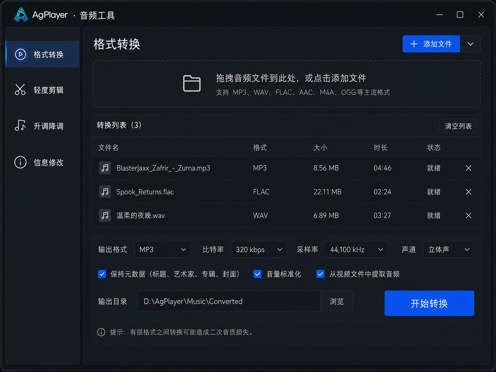
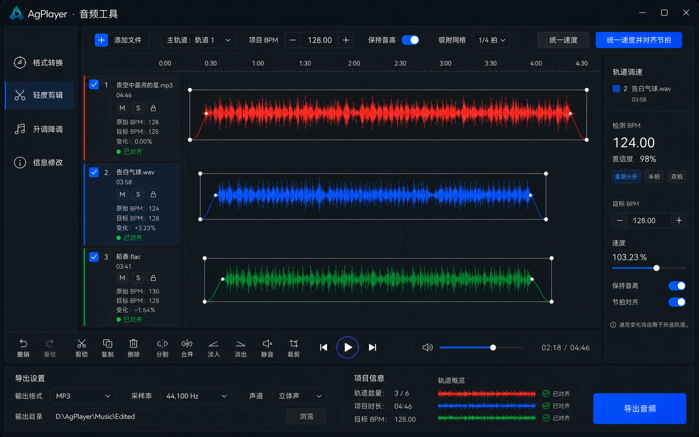
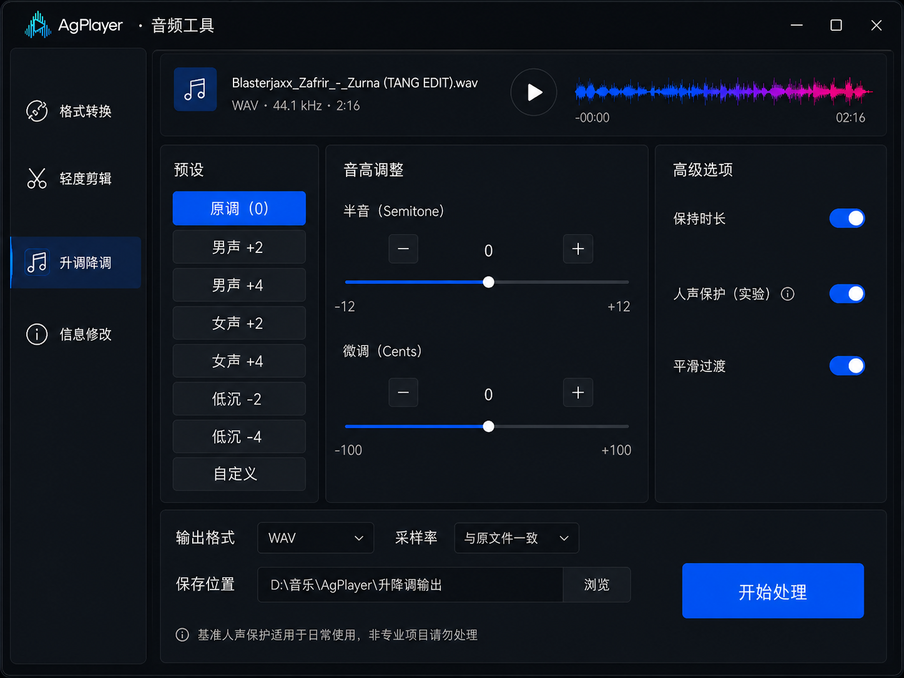
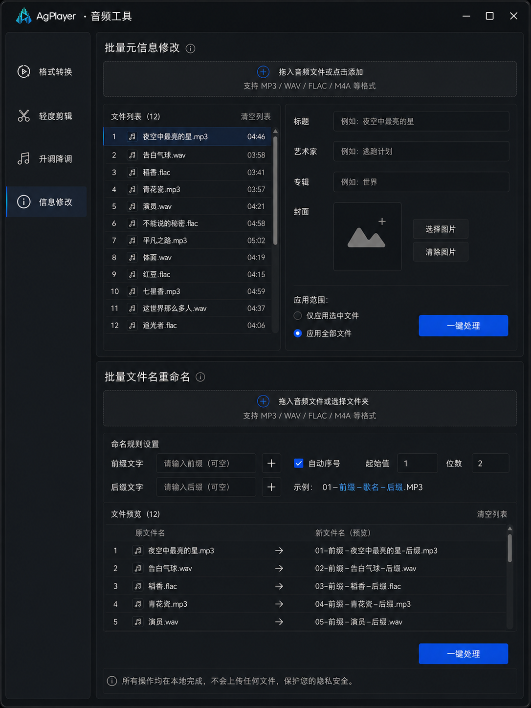
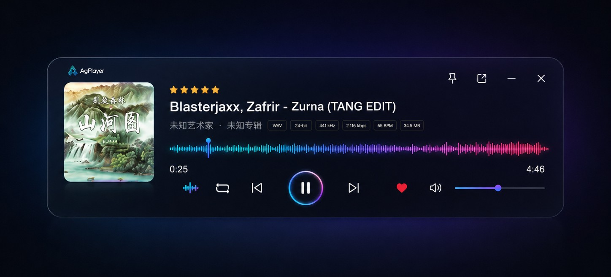

听见音乐 · 看见声音 Hear Music · See Sound ได้ยินเพลง · เห็นเสียง Nghe nhạc · Nhìn thấy âm thanh
AgPlayer 是一款极简、纯净而强大的本地音频播放器，用实时波形呈现声音的每一个细节。 AgPlayer is a minimal, pure, and powerful local audio player that renders every detail of sound with real-time waveforms. AgPlayer เป็นเครื่องเล่นเสียงในเครื่องที่เรียบง่าย บริสุทธิ์ และทรงพลัง แสดงรายละเอียดของเสียงด้วยคลื่นเสียงแบบเรียลไทม์ AgPlayer là trình phát nhạc nội bộ tối giản, tinh khiết và mạnh mẽ, hiển thị từng chi tiết của âm thanh bằng sóng thờ i gian thực

波形可视化Waveform Visualizerตัวแสดงคลื่นเสียงTrình hiển thị sóng âm
不只是播放音乐，更让声音可见 More than playback — make sound visible มากกว่าการเล่นเพลง — ทำให้เสียงมองเห็นได้ Không chỉ phát nhạc — làm cho âm thanh trở nên hữu hình
点击下方按钮添加本地音频，即可在浏览器中体验三种实时波形可视化效果。 Click the button below to add local audio and experience three real-time waveform visualizations in your browser. คลิกปุ่มด้านล่างเพื่อเพิ่มเสียงในเครื่องและสัมผัสการแสดงผลคลื่นเสียงแบบเรียลไทม์ทั้งสามโหมด Nhấn nút bên dưới để thêm âm thanh cục bộ và trải nghiệm ba chế độ trực quan hóa sóng thời gian thực
纯色波形Solid Waveformคลื่นเสียงสีทึบSóng âm đặc
清晰呈现振幅变化，直观感受音乐动态。Clear amplitude changes for an intuitive sense of musical dynamics.แสดงการเปลี่ยนแปลงความดังอย่างชัดเจนHiển thị rõ ràng sự thay đổi biên độ
RGB 波形RGB Gradientไล่สี RGBGradient RGB
RGB渐变，视觉冲击力强，可自定义颜色。Brand gradient flows with the rhythm for strong visual impact.สีไล่ระดับตามจังหวะดนตรี สร้างความโดดเด่นทางภาพDải màu thương hiệu chảy theo nhịp điệu
动态频谱Dynamic SpectrumสเปกตรัมแบบไดนามิกPhổ động
实时频谱柱状图，把频率能量尽收眼底。Real-time spectrum bars reveal frequency energy at a glance.กราฟแท่งสเปกตรัมแบบเรียลไทม์ มองเห็นพลังงานความถี่Biểu đồ phổ thời gian thực hiển thị năng lượng tần số
核心体验Core Experienceประสบการณ์หลักTrải nghiệm cốt lõi
简单外表，专业内核 Simple outside, pro inside ภายนอกเรียบง่าย ภายในระดับมืออาชีพ Bên ngoài đơn giản, bên trong chuyên nghiệp
高保真还原音频试听，去除复杂冗余，让音乐管理、播放和处理都保持简单。 High-fidelity audio playback, removing complexity so music management, playback, and processing stay simple. การเล่นเสียงความละเอียดสูง ลดความซับซ้อนเพื่อให้การจัดการ เล่น และประมวลผลเพลงง่ายขึ้น Phát âm thanh độ trung thực cao, loại bỏ sự phức tạp để quản lý, phát và xử lý nhạc trở nên đơn giản
全格式高保真品质播放Full-format high-quality playbackเล่นไฟล์ได้ทุกรูปแบบคุณภาพสูงPhát đa định dạng chất lượng cao
MP3, WAV, FLAC, AAC, M4A, OGG, Opus, WMA.
无间隙播放Gapless playbackเล่นแบบไม่มีช่องว่างPhát liên tục không gián đoạn
专辑曲目无缝衔接，现场感不间断。Album tracks flow seamlessly without interruption.เพลงในอัลบั้มต่อเนื่องกันอย่างราบรื่นCác bài trong album chuyển tiếp liền mạch
双窗口磁吸Dual-window snapหน้าต่างคู่แม่เหล็กHai cửa sổ hít nhau
播放器和播放列表可吸附组合，自由拆分。Player and playlist snap together or split freely.เครื่องเล่นและรายการเพลงติดกันหรือแยกได้อิสระTrình phát và danh sách phát ghép hoặc tách tự do
极速搜索与筛选Lightning search & filterค้นหาและกรองด้วยความเร็วสูงTìm kiếm và lọc cực nhanh
按标题、艺人、专辑、评分、BPM 快速定位。Search by title, artist, album, rating, or BPM.ค้นหาตามชื่อ ศิลปิน อัลบั้ม คะแนน BPMTìm theo tiêu đề, nghệ sĩ, album, đánh giá, BPM
收藏与评分管理Favorites & ratingsจัดการรายโปรดและคะแนนYêu thích và đánh giá
用星标和收藏构建你的私人音乐库。Build your personal library with stars and favorites.สร้างคลังเพลงส่วนตัวด้วยดาวและรายโปรดXây dựng thư viện cá nhân bằng sao và yêu thích
毫秒级响应Millisecond responseตอบสนองระดับมิลลิวินาทีPhản hồi mili giây
原生性能，点击即响，无延迟等待。Native performance with instant response.ประสิทธิภาพเนทีฟ ตอบสนองทันทีHiệu suất gốc, phản hồi ngay lập tức
音频工具Audio Toolsเครื่องมือเสียงCông cụ âm thanh
四大音频工具，轻便·实用 Four audio tools in one place เครื่องมือเสียงสี่อย่างในที่เดียว Bốn công cụ âm thanh tập trung
转换、剪辑、变调和信息修改，所有处理均在本地完成，不影响音乐正常播放。 Convert, edit, change pitch, and edit metadata — all processed locally without interrupting playback. แปลง ตัดต่อ เปลี่ยนระดับเสียง และแก้ไขข้อมูล — ประมวลผลในเครื่องโดยไม่ขัดจังหวะการเล่น Chuyển đổi, chỉnh sửa, thay đổi cao độ và siêu dữ liệu — tất cả xử lý cục bộ mà không làm gián đoạn phát nhạc

格式转换Format ConverterแปลงรูปแบบChuyển đổi định dạng
做到无损高还原，支持多线程并行转码（批量转码），设置比特率、采样率、声道，转码过程不影响当前音乐播放。Lossless high-fidelity transcoding with multi-threaded parallel batch conversion; adjustable bitrate, sample rate, and channels — no interruption to playback.แปลงไฟล์คุณภาพสูงไม่สูญเสีย รองรับการแปลงหลายเธรดพร้อมกัน (batch) ตั้งค่าบิตเรต อัตราตัวอย่าง ช่องสัญญาณ โดยไม่กระทบการเล่นเพลงปัจจุบันChuyển mã chất lượng cao không suy hao, hỗ trợ chuyển đổi song song đa luồng (hàng loạt), cài đặt bitrate/tốc độ mẫu/kênh, quá trình chuyển mã không ảnh hưởng phát nhạc hiện tại.

轻度剪辑Light Editorตัดต่อเบื้องต้นChỉnh sửa nhẹ
快速完成音频的基础编辑，最多 6 轨编辑，波形缩放、拖动浏览，播放预览，支持修改BPM速度，一键对齐BPM节拍，可裁剪、滚轮可缩放编辑区域。Quick basic audio editing, up to 6 tracks, waveform zoom/drag, playback preview, BPM tempo editing, one-click beat align, trim, scroll-to-zoom.แก้ไขเสียงเบื้องต้นรวดเร็ว แก้ไขสูงสุด 6 แทร็ก ซูมคลื่นเสียง ลากเลื่อน ดูตัวอย่าง แก้ไข BPM จัดจังหวะ BPM แบบคลิกเดียว ตัดต่อ และซูมด้วยล้อเลื่อนChỉnh sửa âm thanh cơ bản nhanh chóng, tối đa 6 track, zoom/drag sóng âm, xem trước phát, chỉnh tốc độ BPM, căn nhịp BPM một chạm, cắt, cuộn để zoom.

升调降调Pitch ShiftปรับระดับเสียงThay đổi cao độ
保持原歌词语速/仅变调” 的独立选项。微调音高，人声保护，平滑过渡，保持歌曲时长自定义调节，实时试听，导出。Independent option to keep original tempo and shift pitch only. Fine-tune pitch, vocal protection, smooth transition, custom duration, real-time preview, export.ตัวเลือกแยก "คงความเร็วเนื้อร้อง/เปลี่ยนระดับเสียงอย่างเดียว" ปรับระดับเสียงละเอียด ปกป้องเสียงร้อง เปลี่ยนผ่านลื่นไหล ปรับระยะเวลาเพลงได้ ฟังตัวอย่างสด ส่งออกTùy chọn riêng "giữ tốc độ lời hát / chỉ đổi cao độ". Chỉnh cao độ tinh, bảo vệ giọng hát, chuyển mượt, tùy chỉnh thời lượng bài hát, nghe thử thời gian thực, xuất file.

信息修改Metadata Editorแก้ไขข้อมูลChỉnh sửa siêu dữ liệu
批量修改音频标签和文件名前后缀，一次处理上百首歌曲，支持单个或全部应用。Batch-edit audio tags and filename prefixes/suffixes, process hundreds of songs at once, apply per-track or all.แก้ไขแท็กเสียงและคำนำหน้า/ต่อท้ายชื่อไฟล์เป็นชุด ประมวลผลเพลงนับร้อยพร้อมกัน รองรับการใช้ทีละเพลงหรือทั้งหมดSửa hàng loạt tag âm thanh và tiền/hậu tố tên file, xử lý hàng trăm bài cùng lúc, áp dụng từng bài hoặc tất cả.

迷你播放器Mini Playerมินิเพลเยอร์Trình phát thu nhỏ
专注音乐 不打扰工作 Focus on music, not distractions โฟกัสที่เพลง ไม่รบกวนการทำงาน Tập trung vào nhạc, không làm phiền công việc
精简而完整的悬浮迷你播放器，保留封面、波形、播放控制和音量调节。 A compact yet complete floating mini player with cover, waveform, playback controls, and volume. มินิเพลเยอร์ลอยแบบกะทัดรัดแต่สมบูรณ์ พร้อมปกเพลง คลื่นเสียง ปุ่มควบคุม และระดับเสียง Trình phát thu nhỏ nổi nhỏ gọn nhưng đầy đủ với bìa album, sóng âm, điều khiển phát và âm lượng
- 窗口置顶与位置记忆，随时回到上次的角落Always-on-top with position memoryหน้าต่างอยู่บนสุดและจำตำแหน่งLuôn ở trên cùng và nhớ vị trí
- 毛玻璃背景搭配 RGB 微光，视觉精致不抢眼Frosted glass with RGB glowพื้นหลังกระจกฝ้าพร้อมแสง RGBNền kính mờ với ánh sáng RGB
- 一键返回完整播放器，继续深入管理曲库One-click back to full playerคลิกเดียวกลับสู่เครื่องเล่นเต็มMột chạm quay lại trình phát đầy đủ
隐私优先 Privacy First ความเป็นส่วนตัวก่อน Riêng tư trước tiên
音乐只属于你 Your music stays yours เพลงเป็นของคุณเท่านั้น Âm nhạc chỉ thuộc về bạn
AgPlayer 不要求登录，不扫描网络账号，所有音乐播放、搜索和音频处理均在你的设备本地完成。 AgPlayer requires no login, scans no network accounts, and handles all playback, search, and audio processing locally on your device. AgPlayer ไม่ต้องเข้าสู่ระบบ ไม่สแกนบัญชีเครือข่าย และประมวลผลการเล่น ค้นหา และเครื่องมือเสียงทั้งหมดในเครื่องของคุณ AgPlayer không yêu cầu đăng nhập, không quét tài khoản mạng, và xử lý mọi phát nhạc, tìm kiếm và công cụ âm thanh trực tiếp trên thiết bị của bạn
- 不上传音乐文件 No file uploads ไม่อัปโหลดไฟล์เพลง Không tải lên tệp nhạc
- 不收集播放记录 No playback tracking ไม่เก็บประวัติการเล่น Không thu thập lịch sử phát
- 无需联网即可使用核心功能 Core features work offline ใช้ฟีเจอร์หลักได้โดยไม่ต้องต่อเน็ต Tính năng cốt lõi hoạt động ngoại tuyến
- 本地歌单、评分和收藏可备份 Local library backup สำรองเพลย์ลิสต์ คะแนน และรายโปรดในเครื่อง Sao lưu danh sách phát, đánh giá và yêu thích cục bộ
重新发现你的
本地音乐收藏
Rediscover your
local music collection
ค้นพบคลังเพลง
ในเครื่องของคุณใหม่
Khám phá lại bộ sưu tập
nhạc nội bộ của bạn
没有账号、没有广告、没有复杂推荐。只有音乐、波形和属于你的播放体验。 No accounts, no ads, no complex recommendations. Just music, waveforms, and a playback experience that's yours. ไม่มีบัญชี ไม่มีโฆษณา ไม่มีการแนะนำที่ซับซ้อน มีแค่เพลง คลื่นเสียง และประสบการณ์ที่เป็นของคุณ Không tài khoản, không quảng cáo, không đề xuất phức tạp. Chỉ có nhạc, sóng âm và trải nghiệm phát thuộc về bạn